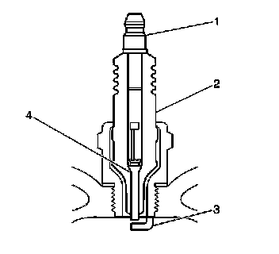
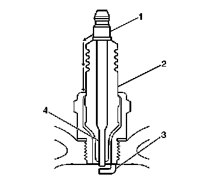
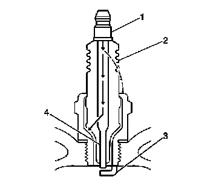
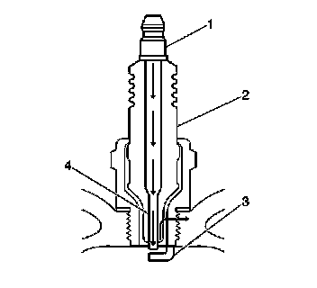

Spark Plug: Testing and Inspection
SPARK PLUG INSPECTION

- Verify that the correct spark plug is installed. An incorrect spark plug causes driveability conditions. Refer to Ignition System Specifications for the correct spark plug.
- Ensure that the spark plug has the correct heat range. An incorrect heat range causes the following conditions:
- Spark plug fouling, replace with a colder plug
- Pre-ignition causing spark plug and/or engine damage, replace with a hotter plug
- Inspect the terminal post (1) for damage.
- Inspect for a bent or broken terminal post (1).
- Test for a loose terminal post (1) by twisting and pulling the post. The terminal post (1) should not move.

- Inspect the insulator (2) for flashover or carbon tracking, or soot. This is caused by the electrical charge traveling across the insulator (2) between the terminal post (1) and ground. Inspect for the following conditions:
- Inspect the spark plug boot for damage.
- Inspect the spark plug recess area of the cylinder head for moisture, such as oil, coolant, or water. A spark plug boot that is saturated will cause arcing to ground.

- Inspect the insulator (2) for cracks. All or part of the electrical charge may arc through the crack instead of the electrodes (3, 4).

- Inspect for evidence of improper arcing.
- Measure the gap between the center electrode (4) and the side electrode (3).
- Inspect for the correct spark plug torque. Insufficient torque can prevent correct spark plug operation. An over torqued spark plug, causes the insulator (2) to crack.
- Inspect for signs of tracking that occurred near the insulator tip instead of the center electrode (4).
- Inspect for a broken or worn side electrode (3).
- Inspect for a broken, worn, or loose center electrode (4) by shaking the spark plug.
- A rattling sound indicates internal damage.
- A loose center electrode (4) reduces the spark intensity.
- Inspect for bridged electrodes (3, 4). Deposits on the electrodes (3, 4) reduce or eliminates the gap.
- Inspect for worn or missing platinum pads on the electrodes (3, 4), if equipped.
- Inspect for excessive fouling.
- Inspect the spark plug recess area of the cylinder head for debris. Dirty or damaged threads can cause the spark plug not to seat correctly during installation.
VISUAL INSPECTION
- Normal operation - Brown to grayish-tan with small amounts of white powdery deposits are normal combustion by-products from fuels with additives.
- Carbon fouled - Dry, fluffy black carbon, or soot caused by the following conditions:
- Rich fuel mixtures
- Leaking fuel injectors
- Excessive fuel pressure
- Restricted air filter element
- Incorrect combustion
- Reduced ignition system voltage output
- Weak ignition coils
- Worn ignition wires
- Incorrect spark plug gap
- Excessive idling or slow speeds under light loads can keep spark plug temperatures so low that normal combustion deposits may not burn off.
- Deposit fouling - Oil, coolant, or additives that include substances such as silicone, very white coating, reduces the spark plug intensity. Most powdery deposits will not affect spark plug intensity unless they form into a glazing over the electrode.